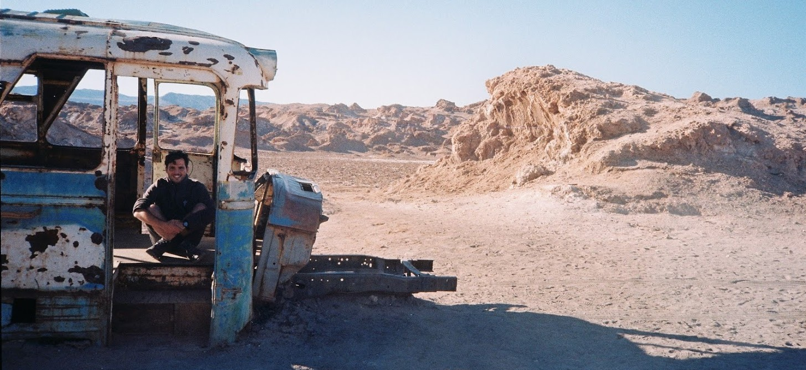

About
Hi, I’m Giulio, welcome to my personal website!
I was born about 22 years ago in Rome, Italy, but I’m actually one of those weird third-culture kids, having lived in a few different places while growing up due to my parents’ job.
I guess you’d expect someone with that sort of upbringing to make use of their experience to build in career in international relations or modern languages. While I do find languages fascinating, I’ve always been a science, tech and future enthusiast which is part of why I decided to study Physics at university, switching to Computer Science and Physics after my first year.
After experiencing and enjoying a bit of the world of software development, at the moment I’m trying to move my career towards research, particularly in the field of Machine Learning, while keeping a door open to OSS development.
The purpose of this website is to officially collect information on myself in a single place, which I can also use as a platform for blogging and my portfolio. More info will probably seep in through other pages so I will leave it there. Thank you!

Me in the Atacama :)